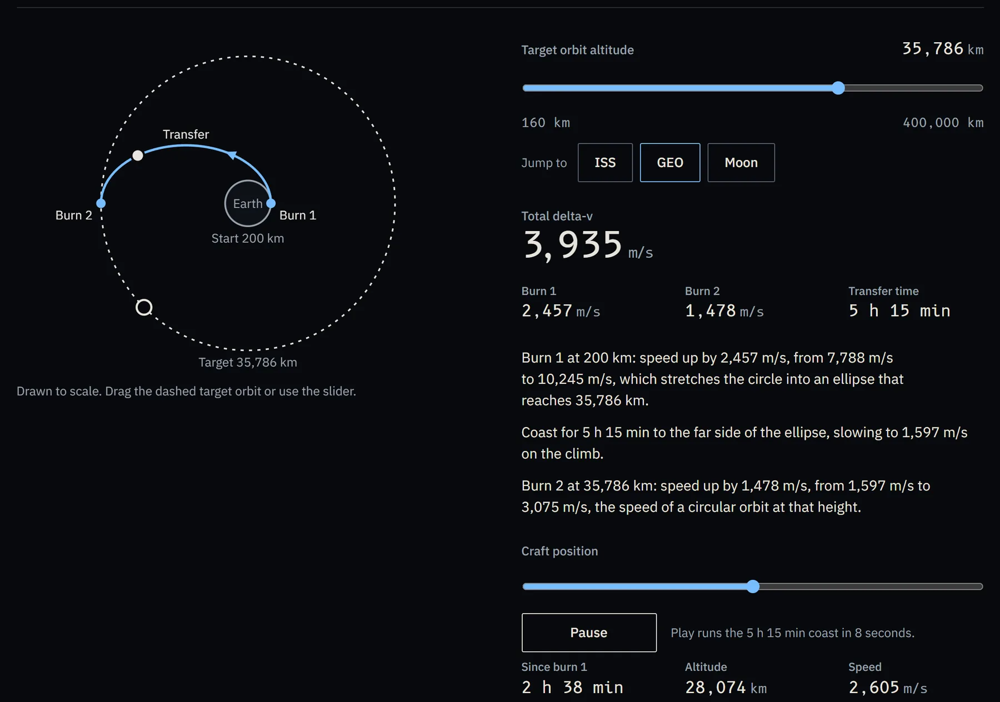
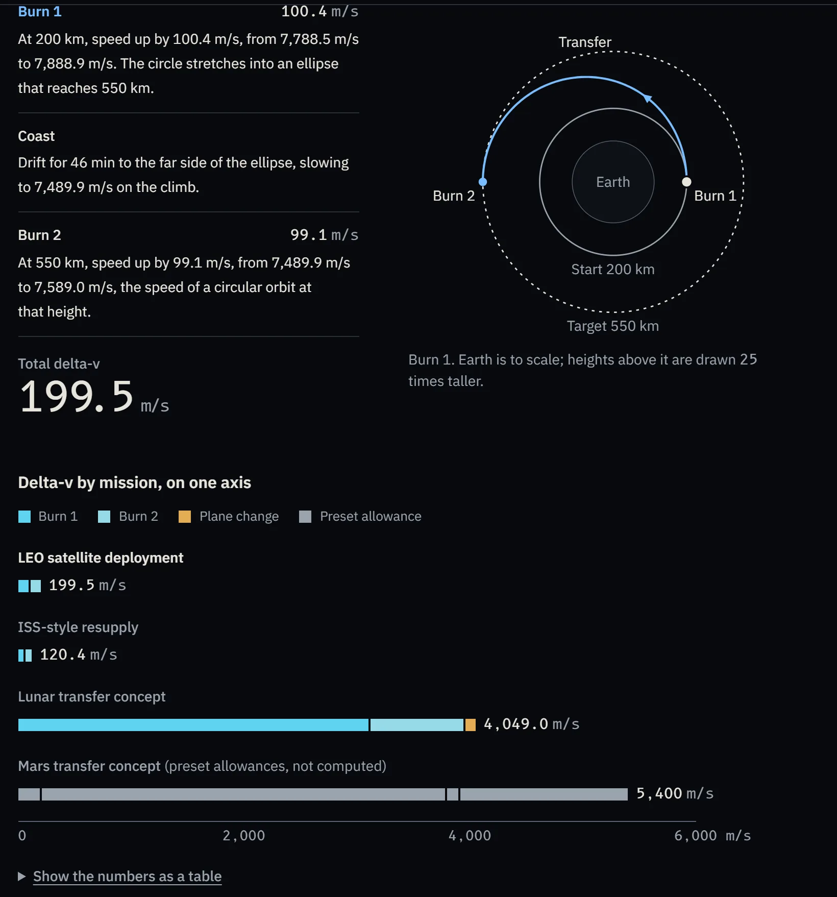
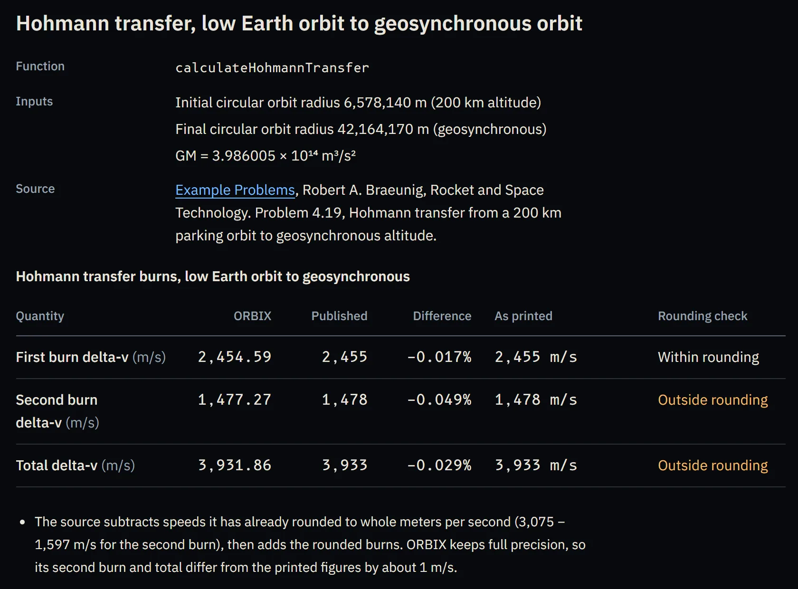
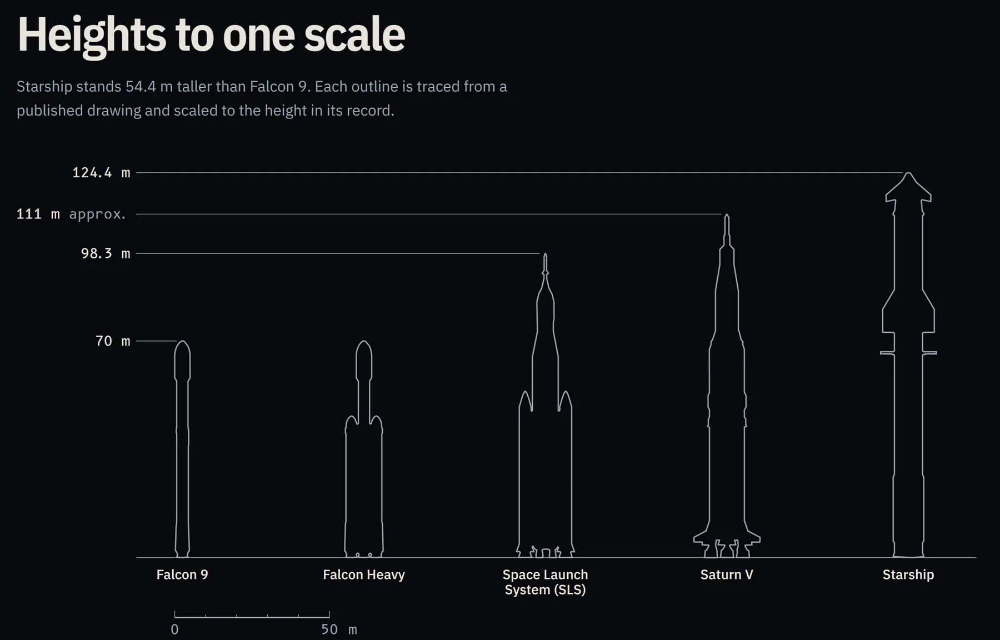
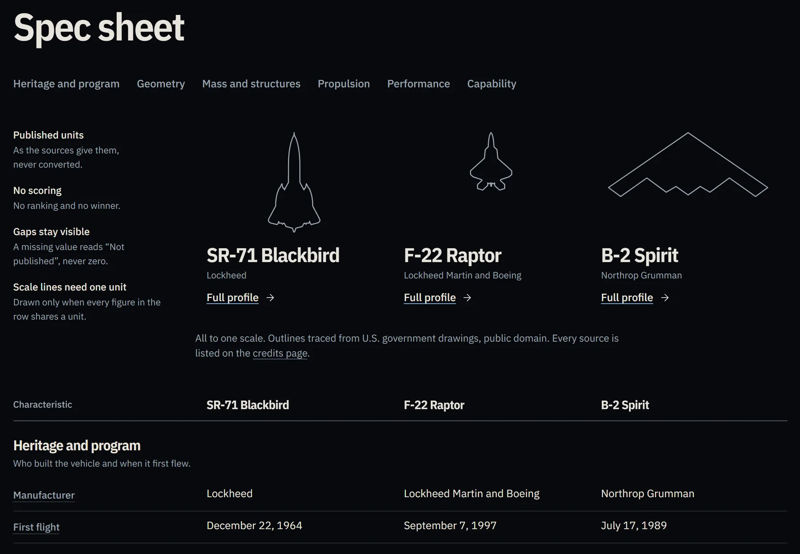
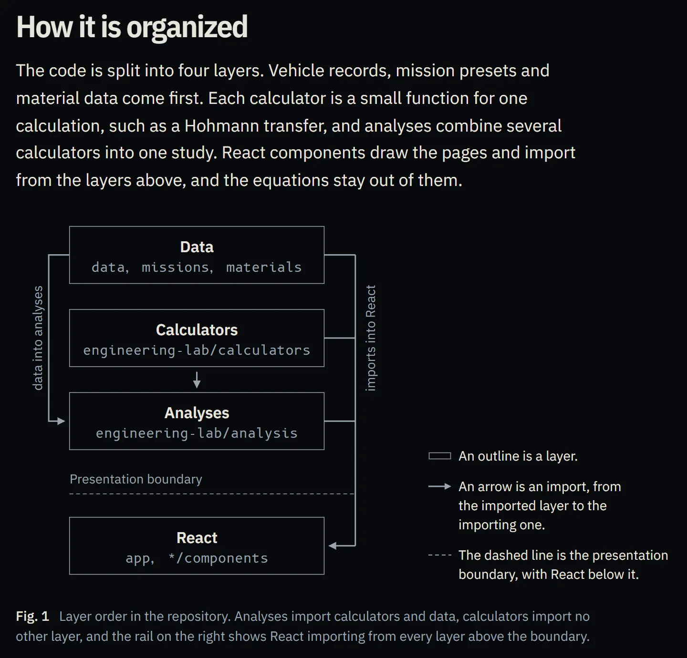

ORBIX
ORBIX is an aerospace engineering web app built around real aircraft and launch vehicles. You can drag an orbit and watch the delta-v change, plan a mission burn by burn, or put three aircraft side by side, and the results are checked against published worked examples. The idea and the research are mine, and I made the design decisions. AI coding assistants wrote the code under my direction.
What it is
I plan to study aerospace engineering, and I wanted one place where I could look at real vehicles and work through the engineering behind them: lift and drag, the rocket equation, orbital transfers, shock waves, and entry heating. ORBIX is that place, and it is free for anyone to use.
The home page opens on the Transfer Explorer. Drag the target orbit anywhere from 160 km to 400,000 km and ORBIX recomputes the two burns of a Hohmann transfer, the total delta-v, and the coast time, then explains each burn in a sentence.

How I built it
ORBIX was my idea. I chose the aircraft and launch vehicles, decided which calculators and mission scenarios to build, and worked out how the pieces connect. For each tool I researched the engineering and the vehicle specifications, then wrote instructions giving the exact equations, inputs, and units it needed. I also set the standards the site had to meet for design, accessibility, and the legal side of running a public website, and I reviewed the results against them.
I am not a software engineer, so AI coding assistants wrote the software: Codex by OpenAI for the first version, then Claude Code by Anthropic. Working from my instructions, they wrote the code, the automated tests, and the page layouts. The full history is public on GitHub, and the commits made with Claude Code are marked as co-authored by it.
Engineers in every field are going to work with these tools, and I wanted to learn to use them well. For me that meant describing exactly what I wanted and checking what came back until it was right.
The Engineering Lab
Each tool in the lab shows its equation, units, and assumptions next to the result. The 13 calculators and the mission planner fall into three groups:
- Foundations
- Rocket equation, thrust-to-weight, lift, drag, standard atmosphere, flight condition
- Compressible flow
- Stagnation condition, normal shock, oblique shock, supersonic inlet compression, stagnation-point heating
- Orbits and missions
- Hohmann transfer, orbital plane change, mission planner

The mission planner strings those calculations together. Pick a preset such as a LEO satellite deployment or a lunar transfer, and it lists every burn in flight order with its delta-v. Steps it does not model, like the launch itself, show up as plain rows that say so. The presets then appear on one shared axis, so a lunar transfer at 4,049 m/s sits next to a 199.5 m/s orbit raise at the same scale.

Checking the math
26 of 36 values within rounding.
To check the calculators, ORBIX has a Verification page. It runs selected lab functions with the inputs from published tables and worked examples, then prints each result beside the published value. The ORBIX numbers come from the same functions the lab uses, so none of them are typed in by hand.
The sources are Robert A. Braeunig's example problems, Brennen's Internet Book on Fluid Dynamics, NACA Report 1135, and the U.S. Standard Atmosphere, 1976. Of 36 compared values, 26 fall within the rounding of the published figure. The other 10 stay on the page with a reason for each. In the Hohmann case below, the source rounds each speed before subtracting, while ORBIX keeps full precision, so the two disagree by about 1 m/s.

Real vehicles
The aircraft are the F-22, F-35, F-15, B-2, and SR-71. The launch vehicles are Falcon 9, Falcon Heavy, SLS, Saturn V, and Starship. Each one has a profile with its published specifications, and every photo has a verified license and a credit.
Public sources often disagree, so ORBIX shows values in the units the source used and never converts them silently. A missing value reads "Not published" instead of zero, and the compare page gives no ranking and no winner. The scale drawings are outlines traced from public-domain government drawings and sized to each vehicle's recorded height or length.


How it is organized
The physics is kept separate from the pages. Each calculator is a small function for one calculation, analyses combine several calculators into one study, and the React components only draw the results. That separation is what lets the Verification page call the exact functions the lab uses.
Every change runs through GitHub Actions before it reaches the live site: formatting, linting, type checks, 1,280 unit tests, a production build, and a separate browser test suite at desktop, tablet, and phone sizes, which includes accessibility checks.

What I learned
Building ORBIX taught me the basics of each aircraft and launch vehicle in it: what each one was designed to do and how its design serves that purpose.
I learned more from the Engineering Lab. Before any tool could be built, I had to research which equation it uses, what goes into it, and what the result means. Across the lab, that meant learning how lift, drag, thrust, gravity, shock waves, and heating behave, and working out how each one could be calculated. Using the finished tools, I learned what it is like to change one input, rerun the calculation, and see how an orbital transfer or a shock wave responds.
Taking ORBIX from planned features through testing and fixing mistakes gave me real experience with how software gets made.
Built with
Next.js · React · TypeScript · Vitest · Playwright · GitHub Actions · Vercel · Codex · Claude Code